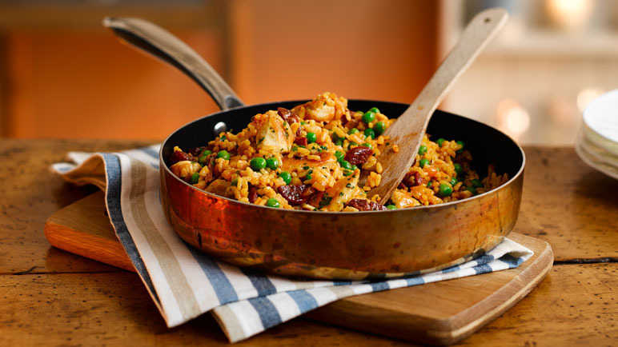

Ingredients
- ½ tbsp olive oil
- 200g chopped onion
- 2 tsp chopped garlic
- 2 tsp paprika
- 250g Spanish paella rice
- 800ml hot chicken stock, made with ½ chicken stock cube
- 300g garden peas
- 100g chorizo ring, roughly chopped
- 400g mini chicken fillets, cubed
Method
- Heat the olive oil in a large, deep frying pan over a medium-high heat
- Add the chopped onion and cook, stirring frequently, for 8-10 minutes until soft
- Add the chopped garlic and paprika for the last minute
- Stir through the paella rice, then add the saffron and stock
- Bring to the boil, then reduce to a simmer and cook, covered, for 15 minutes
- Stir in the peas for the final 2 minutes
- Meanwhile, heat another frying pan over a medium heat and the chorizo and cook for 3 minutes until browned
- Remove with a slotted spoon and set aside
- Add the chicken and cook for 10 minutes until golden and cooked through with no pink remaining
- Stir the chorizo, chicken and parsley through the rice mixture to serve
